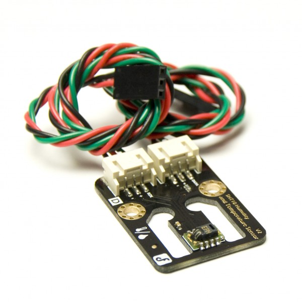
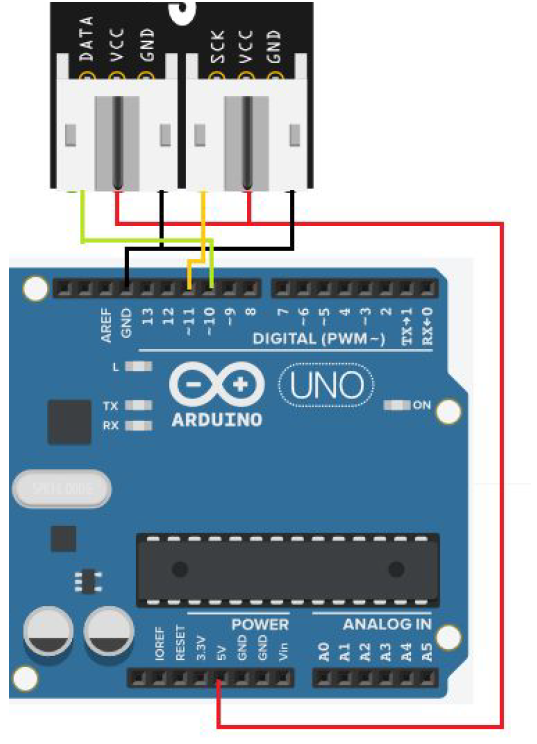
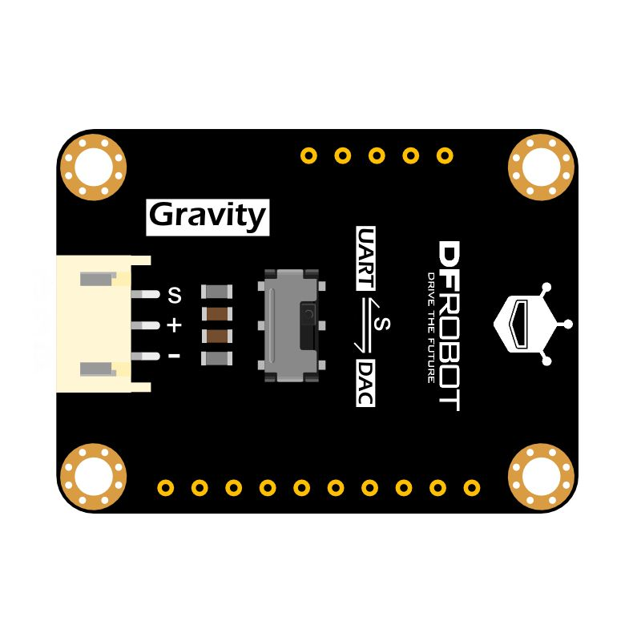
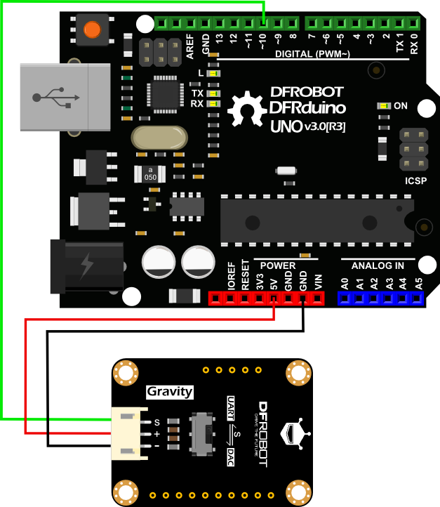
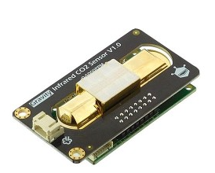
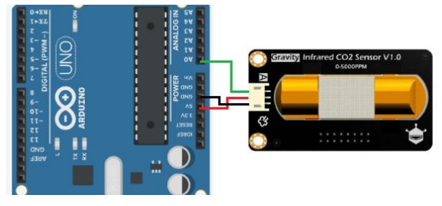
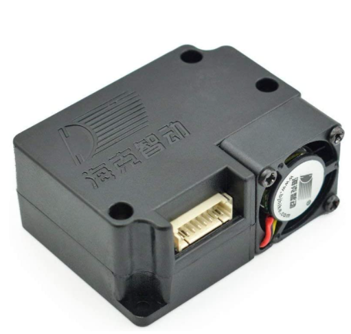
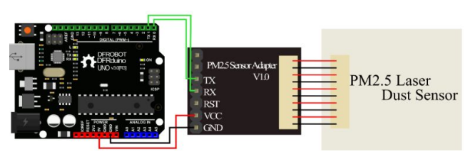
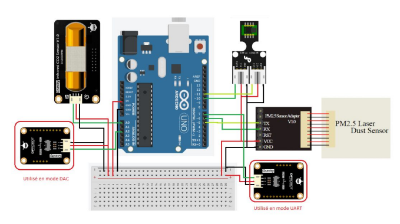

Le capetur de température et d'humidité Gravity DFR0066

Il s’agit d’un capteur digital de température et d’humidité basé sur un SHT1x et permettant de mesurer
la température ambiante entre -40°C et +128°C et l’humidité via deux sorties indépendantes.
Voici le montage sur la carte Arduino Uno utilisé pour ce capteur :

Le code est disponible en Annexe 1.
Le capteur de Gaz HCHO Gravity SEN0231

Il s’agit d’un capteur digital de température et d’humidité basé sur un SHT1x et permettant de mesurer
la température ambiante entre -40°C et +128°C et l’humidité via deux sorties indépendantes.
Voici le montage sur la carte Arduino Uno utilisé pour ce capteur :

Le code est disponible en Annexe 2.
Le capteur de CO2 infrarouge Gravity SEN0219

Le module est composé d’un capteur de CO2 infrarouge et d’une carte d’interface analogique. Ce module mesure le CO2
avec une grande sensibilité et une excellente linéarité.
Voici le montage sur la carte Arduino Uno utilisé pour ce capteur :

Le code est disponible en Annexe 3.
Le capteur de CO2 infrarouge Gravity SEN0219

Ce module permet de mesurer la quantité de particules présentes dans l’air sur 3 calibres (0,3 à 1 μm - 1 à 2,5 μm - 2,5 à 10 μm).
Voici le montage sur la carte Arduino Uno utilisé pour ce capteur, le capteur est fourni avec un adaptateur que l’on peut voir
ci-dessous :

Le code est disponible en Annexe 4.
L'assemblage final des capteurs sur la carte
Après avoir testé tous les capteurs individuellement, il est temps de rassembler leurs codes pour les faire fonctionner simultanément.
Voici le montage sur la carte Arduino Uno utilisé pour ce capteur, le capteur est fourni avec un adaptateur que l’on peut voir
ci-dessous :

Le code est disponible en Annexe 5.
Il ne vous reste plus qu'à brancher votre carte à votre ordinateur et incrémenter vos codes ! Vous pouvez suivre
ce tutoriel si nécessaire ! Bravo !